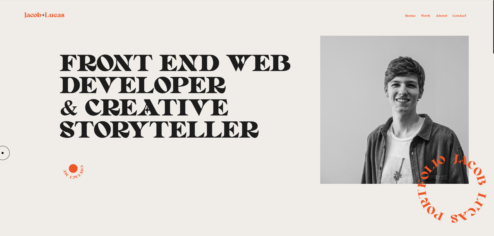

PORTFOLIO
Previous Personal Design Portfolio, showcasing my work and personal projects.
For my personal portfolio, I wanted to create something that really represented me as a brand rather
than a person. Me as a designer, front-end developer and most imprtantly as a creative.
I wanted to incorporate styles of design I love; funky fonts, hues of orange, and little bits of
motion using JavaScript as I was developing my skills in the language at the time.
My added projects span some of my university projects and personal work.
Scrapbook was my final project during university, my capstone. It was a culmination of my learning and work
over the course of the 3 to 4 years, incorporating techinical JavaScript which was what I wanted to show off
as my techincal skills were what I had developed the most over the 3 years, minimal and subtle graphical
elements, and a personal and relatable around it to make it more intesting and give users a reason to check
it out.
Spill on the other hand was a group project. An interactive physical experience, teaching those who were
able to check it out, about finances for the younger generation and taking the users on a interactive
journey through different finance related situations.
Codes and Conventions of Anime was a project more working with JavaScript and P5.js, and how to develop generative art
using JavaScript to portray different conventions of the animation medium.
Finally, some personal photoshop and design art work I had developed in my free time to better learn how to
use photoshop and the adobe suite, to further develop my digital design skills.
